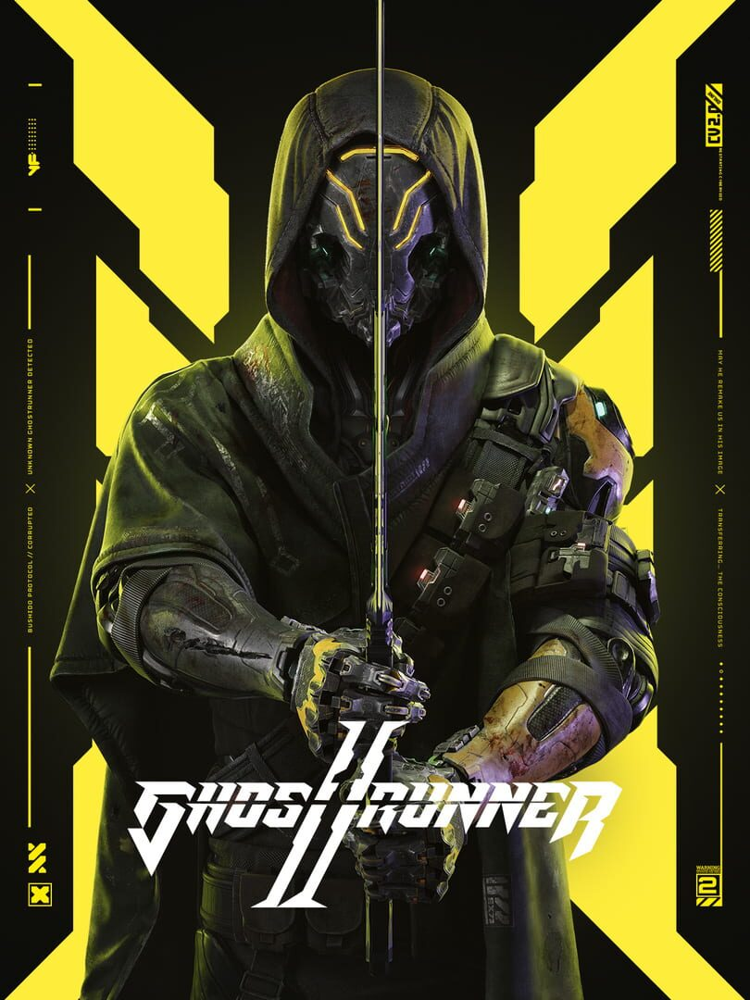

Ghostrunner 2
Ghostrunner 2
Details
|  | |
| Playtime | Not Played |
| Last Activity | Never |
| Added | 08/07/2025 0:26:22 |
| Modified | 08/07/2025 0:28:23 |
| Completion Status | Not Played |
| Library | Steam |
| Source | Steam |
| Platform | PC (Windows) |
| Release Date | 26/10/2023 |
| Community Score | 78 |
| Critic Score | 76 |
| User Score | |
| Genre | Adventure Hack and slash/Beat 'em up Platform Strategy |
| Developer | One More Level |
| Publisher | 505 Games |
| Feature | Single Player |
| Links | Steam Official YouTube Discord Epic Uknown |
| Tag | |
Description
Blood will run in the highly anticipated hardcore FPP slasher set one year after the events of Ghostrunner. Adventure through a post-apocalyptic cyberpunk future that takes place after the fall of the Keymaster, a tyrant who ruled over Dharma Tower, the last refuge of mankind. Jack is back to take on the violent AI cult that has assembled outside Dharma Tower and shape the future of humanity.
Featuring incredible katana combat mechanics, a deeper exploration of the world beyond Dharma Tower, nonlinear levels with complex motorbike sections, exciting new modes, and all the action you loved about Ghostrunner. Plus, boss fights are more interactive, giving players freedom to choose how to survive battles against the toughest opponents.

Become The Ultimate Cyber Ninja
Ghostrunner 2 introduces new skills, allowing players to be more creative and take on even the most demanding encounters with greater accessibility. However, enemies in Ghostrunner 2 behave uniquely dependent on the skills used against them, providing a fresh challenge with each encounter. The player progression system has been completely redone, providing opportunities to experiment and customize gameplay.

Immersive, Mind-Bending Features
Master the Cybervoid if you hope to survive. Take on challenging, new enemies as you traverse interactive environments including exploding barrels, destructible walls, helpful neutral entities, and countless improvements that keep combat exciting and fresh. Can’t get enough? Dive even deeper into the lore and plot with the new dialogue system.

Sounds of the Cybervoid
Save humanity in style as you decimate your opponents while listening to the captivating synthwave soundtrack featuring new music from Daniel Deluxe, We Are Magonia, Gost, Dan Terminus, and Arek Reikowski.